On macOS, Finder can connect to network share. After opening it, hit
Cmd + K, or select Go and Connect to Server... to open the
corresponding pop-up. In the address field, enter smb://$(address) where
$(address) is replaced with the network share address. For instance:
smb://fcbgnasc.epfl.ch/fcbgdata
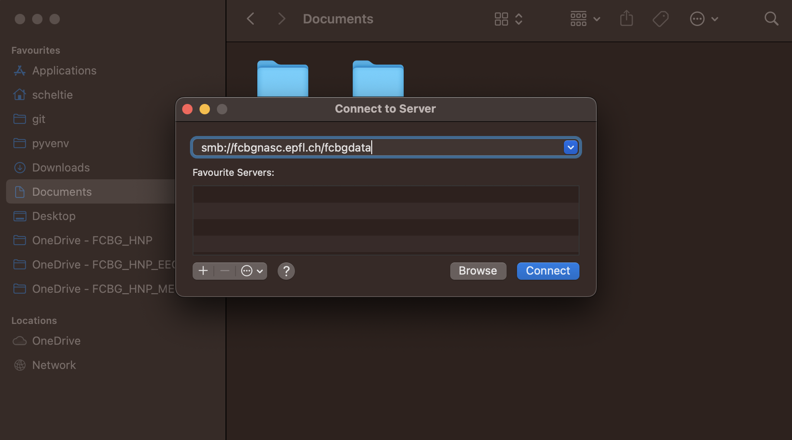
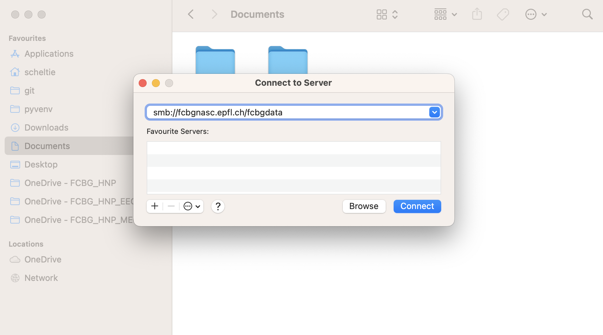
A pop-up will request your credentials. Select Registered User, enter your
username and password.
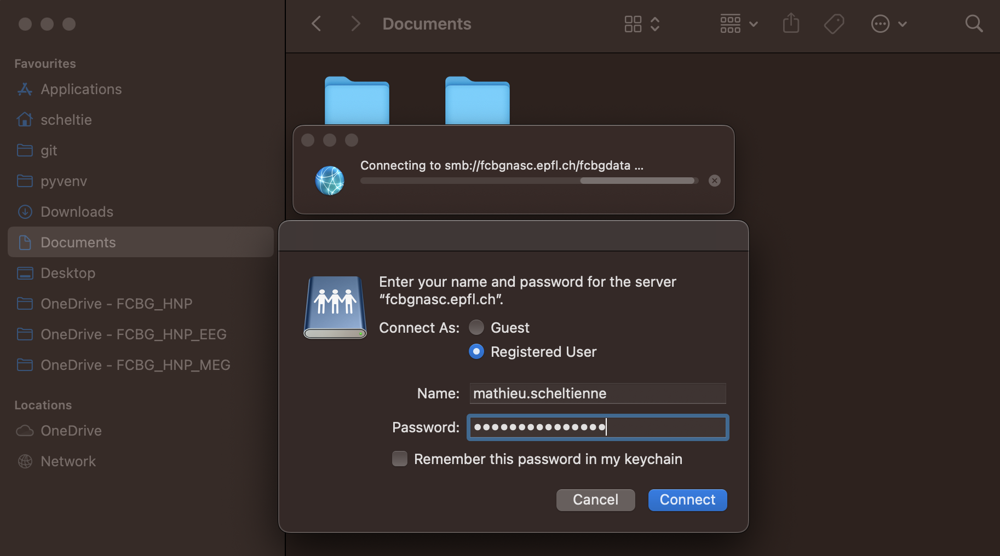
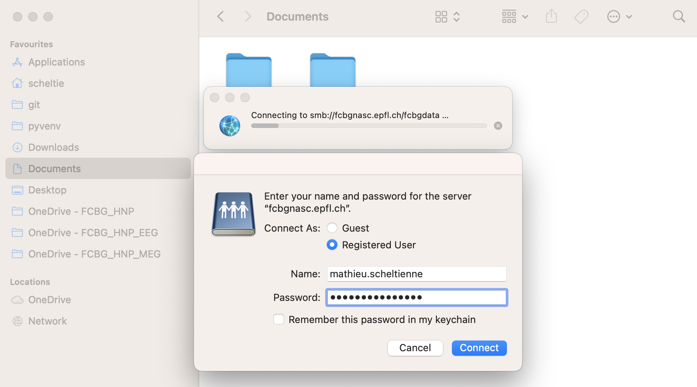
The network share is now mounted and appears in the left pane as an external
drive.
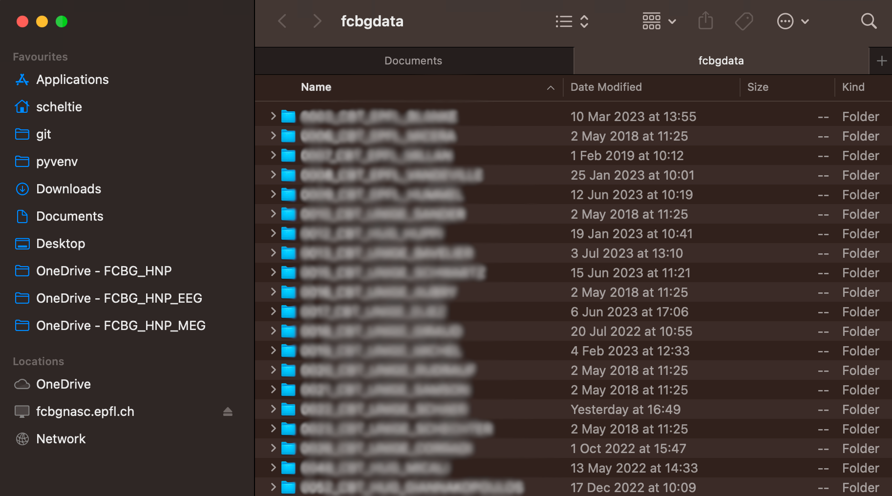
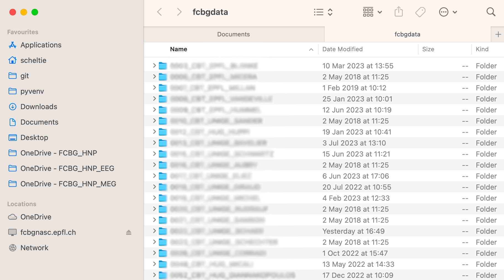
Mounting the network share might differ depending on your Linux distribution.
For an Ubuntu-based distribution, the network share can be mounted from the
nautilus file explorer. It requires smbclient to be installed.
sudo apt install smbclient
In the left pane of the file explorer, select Other locations. At the
bottom, in the field Connect to Server, enter smb://$(address) where
$(address) is replaced with the network share address. For instance:
smb://fcbgnasc.campusbiotech.ch/fcbgdata
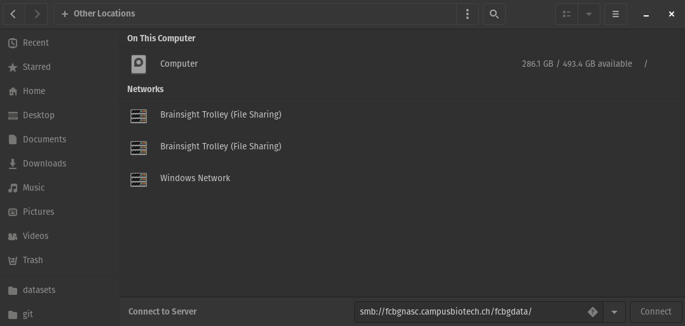
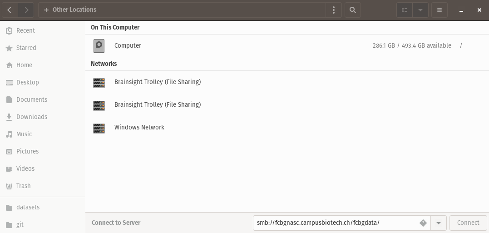
A pop-up will request your credentials. Select Registered User, enter your
username, domain (campusbiotech.ch, epfl.ch or unige.ch) and
password.
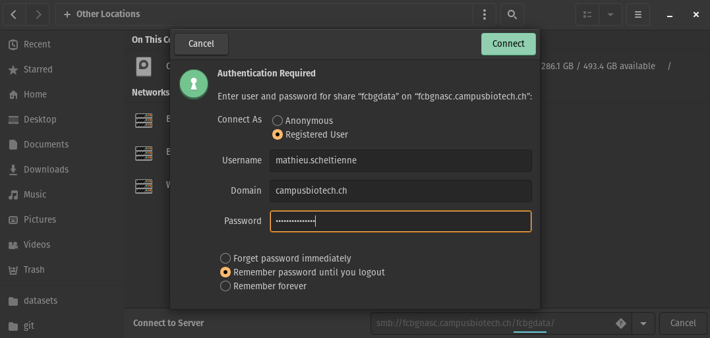
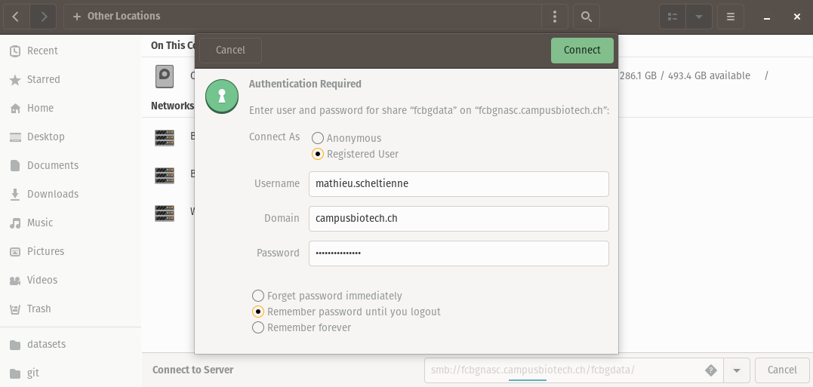
The network share is now mounted and appears in the left pane as an external
drive.
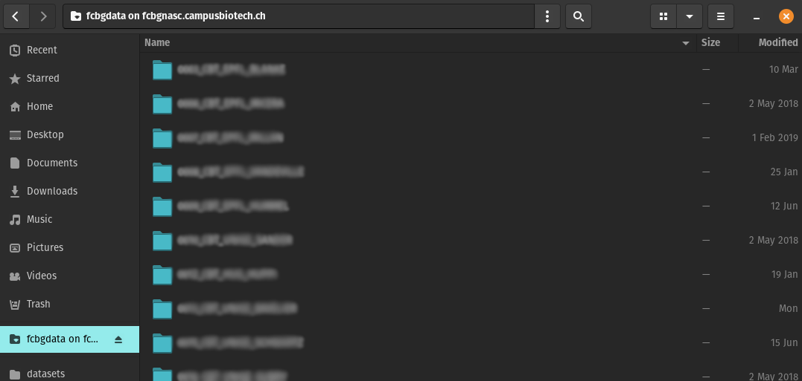
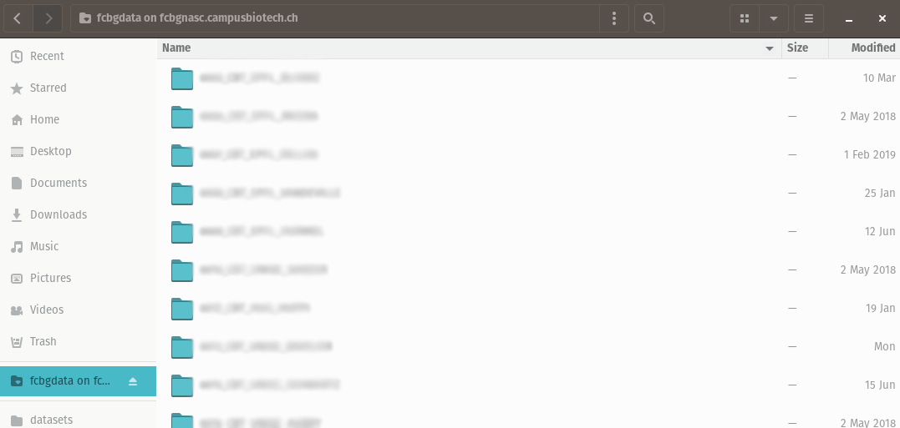
Note
If you want to mount the network share automatically, e.g. on boot, you can
edit /etc/fstab and use cifs.
sudo apt install cifs-utils
sudo mkdir /mnt/Isilon # location in which the share is mounted
sudo nano /etc/fstab
In the fstab, add a line:
//fcbgnasc.$(network).ch/fcbgdata/$(share) /mnt/Isilon cifs credentials=/root/.smbcredentials,uid=$(user),gid=$(user),file_mode=0770,dir_mode=0770 0 0
Where $(network) is replaced by the network you are connected to,
$(share) is replaced by the share name, $(user) is replaced by your
username. The credentials have to be defined in /root/.smbcredentials:
username=...
password=...
domain=... # campusbiotech.ch, epfl.ch or unige.ch
If you are using systemd, you can add the flags:
x-systemd.automount to automatically mount the share if it was not
already available when you navigate to /mnt/Isilon.
x-systemd.after=network-online.target to mount only after the target
network is connected.